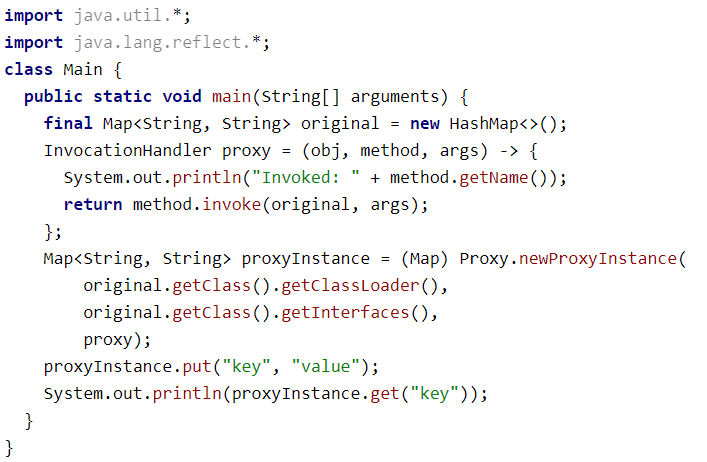

Java
Структурные паттерны (structural patterns)
С созданием объектов стало понятнее. И теперь самое время посмотреть на структурные паттерны.
Их цель — построение удобных в поддержке иерархий классов и их взаимосвязей.
Одним из первых и всем известных паттернов — "Заместитель" (Proxy).
Заместитель имеет тот же интерфейс, что и реальный объект, поэтому для клиента нет разницы — работать через заместителя или напрямую. Самым простым примером является java.lang.reflect.Proxy:
Как видно, в примере у нас есть original — это HashMap, который реализует интерфейс Map. Мы далее создаём прокси, который замещает оригинальную HashMap для клиентской части, которая вызывает методы put и get, добавляя во время вызова свою логику.
Как мы видим, взаимодействие в паттерне идёт через интерфейсы. Но иногда заместителя недостаточно. И тогда может быть использован паттерн "Декоратор" (Decorator). Декоратор ещё называют обёрткой или враппером (Wrapper). Прокси и декоратор очень похожи, но если посмотреть на пример — будет видна разница:
В отличии от прокси, декоратор оборачивается вокруг чего-то, что передали на вход. Прокси же может как принимать то, что нужно проксировать, так и сам управлять жизнью проксируемого объекта (например, создавать проксируемый объект).
Есть ещё один интересный паттерн — "Адаптер" (adapter). Он похож на декоратор — на вход декоратор принимает один объект и возвращает обёртку над этим объектом. Отличие в том, что цель у этого не изменение функционала, а адаптация одного интерфейса к другому.
В Java есть очень яркий пример на этот счёт:

На входе у нас массив. Далее мы создаём адаптер, приводящий массив к интерфейсу List. Работая с ним мы на самом деле работаем с массивом. Поэтому, добавлять элементы не выйдет, т.к. массив изначальный не изменить. И мы в этом случае получим UnsupportedOperationException.
Следующим интересным подходом в разработке структуры классов является паттерн "Компоновщик" (Сomposite). Интересен он тем, что некоторый набор элементов использующих один интерфейс выстраиваются в некоторую древовидную иерархию. Вызывая метод в родительском элементе мы получаем вызов этого метода по всем необходимым дочерним элементам.
Яркий пример этого паттерна — UI (будь то java.awt или JSF):
Как мы видим, мы добавили в контейнер компонент. А потом попросили контейнер применить новую ориентацию компонентов. И контейнер, зная из каких компонентов он состоит, делегировал выполнение этой команды всем дочерним компонентам.
Ещё одним из интересных паттернов является паттерн "Мост" (Bridge). Называется он так, потому что описывает соединение или мост между двумя различными иерархиями классов.
Одну из этих иерархий считают абстракцией, а другую — реализацией. Так выделено потому что абстракция сама не выполняет действия, а делегирует это выполнение реализации. Такой паттерн часто применяют тогда, когда есть классы "управления" и несколько видов классов "платформ" (например, Windows, Linux и т.д.).
При таком подходе одна из этих иерархий (абстракция) получит ссылку на объекты другой иерархии (реализация) и будет делегировать им основную работу. Благодаря тому, что все реализации будут следовать общему интерфейсу, их можно будет взаимозаменять внутри абстракции.
В Java яркие пример этому — java.awt:
Среди структурных паттернов так же хочется отметить паттерн "Фасад" (facade). Суть его в том, чтобы за удобным и лаконичным интерфейсом спрятать сложность использования библиотек/фрэймворков, стоящих за этим API. Например, как пример, можно привести JSF или EntityManager из JPA.
Так же есть другой паттерн, называемый "Легковес" (Flyweight). Его суть заключается в том, что если у разных объектов есть одинаковое состояние, то его можно обобщить и хранить не в каждом объекте, а в одном месте. И тогда каждый объект сможет ссылаться на общу часть, что позволит сократить расходы памяти на хранение.
Часто работа данного паттерна связана с предварительным кэшированием или с поддержанием пула объектов. Интересно, что этот паттерн мы тоже знаем с самого начала: